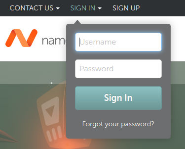
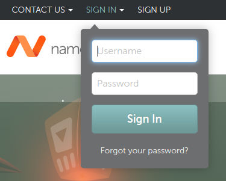

HTML
Hypertext Markup Language
HTML - Mindmap
HTML - Hypertext Markup Language
Hypertext - Übertext
- Text mit Querverweisen zur Bildung einer netzartigen Struktur
- Vergleichbar mit Inhaltsverzeichnissen aus Büchern
HTML - Hypertext Markup Language
Markup Language - Auszeichnungssprache
HTML - Hypertext Markup Language
Markup Language - Auszeichnungssprache
- Darstellung von Inhalt eines Dokumentes erweitert um die Information, wie der Text strukturiert ist
- Ursprünglich: Angaben für den Setzer im "Drucksatz"
Historie - Steinzeit
- 1989 (Anfang): Tim Berners-Lee schreibt seine ersten Vorschläge für ein World Wide Web
Beschreibung eines "web"s mit "hypertext documents" die von "browsern" betrachtet werden
- 1990 (Ende): Erster Webserver und Browser für Demonstrationen
- 1993: Erste HTML-Spezifikation von der Internet Engineering Task Force (IETF)
Quelle: CERN: A short history of the Web
Historie - Bronzezeit
- 1995: HTML 2.0 als RFC 1866 veröffentlicht
- 1997: HTML 3.2 durch das World Wide Web Consortium (W3C, www.w3c.org) veröffentlicht
- 1997-2000: HTML 4.x mit "Strict", "Transitional" und "Frameset" veröffentlicht
- 2008: HTML 5 durch das WW3C veröffentlicht
Quelle: Wikipedia: HTML
Historie - Neuzeit
- 2014: HTML 5 veröffentlicht als W3C
Recommendation
- Verbesserte Unterstützung für Multimedia
- Viele neue semantische Tags (main, footer, ...)
- Verbesserte Unterstützung für Web-Anwendungen, z.B. Window- und Navigator-APIs
- 2019: HTML als "Living Standard": https://html.spec.whatwg.org/multipage/ veröffentlicht von der Web Hypertext Application Technology Working Group (WHATWG)
Markup - Auszeichnungen
- Angaben dazu, wie der Text strukturiert ist
- Überschriften
- Absätze
- Verweise (Links)
- Tabellen
- Zitate
- Blöcke
- Bilder
- ...
Tags - Elemente
- Struktur: <tagname></tagname>
- Öffnendes Tag: <tagname>
- Schließendes Tag: </tagname>
"geöffnete" Tags müssen bis auf wenige Ausnahmen geschlossen werden!
- Beispiel: <p>Mein Absatz</p>
- Ausnahme: <br> (Zeilenumbruch)
Empty Tags - Leere Auszeichnungen
- Dürfen keinen Inhalt haben
- Dürfen keinen schließendes Tag haben
Beispiele
- <hr> oder <hr/> (Horizontale Linie)
- <img> oder <img/> (Bild)
Englisch: "void elements" MDN
NICHT
- <hr></hr>
- <img></img>
Tag Attribute
- Struktur:
<tagname attribut1="value1" attribut2="value2"...></tagname> - Beispiel:
<p lang="en">This paragraph is marked as english</p>
- Für manche Attribute muss kein Wert angegeben werden. (Schlechter Stil)
- Anführungszeichen können in HTML entfallen, wenn der Wert nur aus einem Wort
besteht.
(Ganz schlechter Stil!!)
Tag Baumstruktur - Schachtelung
Tags können und müssen ineinader
verschachtelt werden!
Ein Tag, das in einem anderen Tag geöffnet wird muss geschlossen werden, bevor das erste Tag geschlossen werden kann.
- Richtig: <tag1><tag2></tag2></tag1>
- Falsch: <tag1><tag2></tag1></tag2>
HTML vs. XML
- Sehen sich sehr ähnlich, HTML ist aber weniger "strikt"
- Nicht alle geöffneten Tags müssen geschlossen werden
- Mögliches entfallen von Anführungszeichen bei Attributwerten (immernoch schlechter Stil!)
- Andere Dokumenttyp-Deklaration
- Groß- und Kleinschreibung in Tags
HTML - Hello World
./code-examples/01_hello-world/hello-world.html
Aufbau eines HTML-Dokuments
- Dokumenttyp-Deklaration
- HTML5: <!DOCTYPE html>
- Dokument (<html>) besteht aus:
- Kopfdaten: <head></head>
- Inhalt: <body></body>
HTML - Nur Text?
Absätze und Überschriften
- Absätze: <p></p>
- Beginnt mit einer neuen Zeile, danacht folgt ein Zeilenumbruch.
- Standard: Abstand vor und nach dem Absatz.
- Überschriften: <h1></h1>...<h6></h6>
- Beginnt jeweils mit einer neuen Zeile, danach folgt ein Zeilenumbruch.
- <h1> ist die höchstrangige Überschrift, <h6> die niedrigstrangige.
- Von <h1> nach <h6> wird die Schrift und die Abstände kleiner.
HTML - Absätze und Überschriften
Fett, kursiv, hoch und tief
- Fett: <b></b> (bold)
- Text zwischen <b> und </b> wird fett ausgegeben
- Kursiv: <i></i> (italic)
- Text zwischen <i> und </i> wird kursiv ausgegeben
- Hochstellung: <sup></sup> (superscript)
- Text zwischen <sup> und </sup> wird hochgestellt
- Tiefstellung: <sub></sub> (subscript)
- Text zwischen <sub> und </sub> wird tiefgestellt
HTML - Fett, kursiv, hoch und tief
Zeilenumbruch
- Umbruch: <br> oder <br> (line break)
HTML - Zeilenumbruch
Praxis - Aufgabe 0 - HTML
Texteditor - Empfehlungen
Browser
CLI-Texteditor: vim with ":syntax on"
Praxis - Aufgabe 1 - CV
Schreiben Sie eine HTML-Seite auf der sie sich selbst darstellen (z.B. in Form eines Lebenslaufs). Verwenden Sie dazu Überschriften, Absätze und Textvorhebungen.
Tip: Syntax-Check: https://validator.w3.org/nu/
(Check by text input)
Tip: Erzeugung von Fließtext: http://www.loremipsum.de/
Lösung - Aufgabe 1 - CV
Code:
gitlab.com/.../TINF23B2/html/aufgaben/
01-cv/loesung.html
Deployed:
gitlab.io/.../TINF23B2/html/aufgaben/
01-cv/loesung.html
Bisherige Tags
- h1, h2, h3, h4, h5, h6
- p, br
- b, i
- sup, sub
Sind diese Tags alle gleichwertig?
Block- vs. Inline-Elemente
- Block-Elemente
- können Block- oder Inline-Elemente enthalten
- beginnt mit einer neuen Zeile davor und danach
- (üblicherweise) mit Abstand davor und danach
- bisher: h1 ... h6, p
- Inline-Elemente
- dürfen keine Blockelemente enthalten
- Kein (extra) Zeilenumbruch
- (üblicherweise) keine Abstände
- bisher: b, i, sup, sub, br
HTML - Block- vs. Inline-Elemente
HTML - Block- vs. Inline-Elemente
Tags und Attribute
- Tags können mit Attributen versehen werden
- <tagname attribut1="value1" attribut2="value2"></tagname>
- Beispiel: <p lang="fr"> ... </p>
Zugelassene Attribute sind abhänging vom Tag.
Einige Attribute sind global, also für alle Tags zulässig.
Wichtige Globale Attribute
- id - Eindeutiger Name des Elementes
- Wert: eindeutiger Name ohne Leerzeichen
- class - Zuordnung des Elements zu einer oder mehreren Gruppen
- Wert: unsortierte Liste von Namen
- lang - Sprache des Elementinhalts
- Wert: Sprachbezeichner (z.B. de, en, en-us, ...)
- title - Zusatzinformation ("advisory
information")
- Wert: beliebiger Text
- Taucht üblicherweise als Tooltip auf
- Wird an Unterelemente vererbt
Mehr Wichtige Globale Attribute
- dir - Schreibrichtung
- Wert: "ltr" (left to right), "rtl" (right to left), "auto"
- tabindex - Tabulator-Reihenfolge
- Wert: Zahl (ganzzahlig, aufsteigend)
- spellcheck - Rechtschreibprüfung
- Wert: "true" or "false"
- Browser entscheidet ob er es anwendet
(z.B. typischerweise nur editierbare Elemente)
- hidden - Verbergen eines Elements
- Wert: leer oder "hidden" (Case-Insensitiv)
- Markiert nicht (mehr) relevante Elemente
Mehr Wichtige Globale Attribute 2
- contenteditable - Editierbarkeit
- Wert: leer, "true", "false"
- Falls leer oder "true" kann Inhalt editiert werden
- translate - Übersetzbarkeit
- Wert: leer, "true", "false"
- Legt fest, ob der Inhalt übersetzt werden darf.
- Wird an Unterelemente vererbt
- data-* - anwendungsspezifische Daten
- Wert: beliebiger Text
- <span data-nummer="1234">Max Müller</span>
- Clientseitige Logik kann auf Werte zugreifen
Globale Attribute Drag&Drop
- draggable - mit der Maus ziehbar
- Wert: "true", "false"
- dropzone - Ablageort für ziehbare Elemente
- Wert: unsortierte Liste aus "copy", "move", "link", "string: [*]", "file: [*]"
- Achtung: in gängigen Browsern noch nicht unterstützt :(
- ondragover - Eventhandler
- Wert: JavaScript Funktion
- Unterstützung durch alle Browser
Globale Attribute CSS
- style - direkte Stilangabe
- Wert: CSS-Eigenschaften
Semantische Textauszeichnung
- em – emphasis (Betonung)
- strong – "strong importance" (hohe Wichtigkeit)
- mark – marked (Markiert)
Optische Textauszeichnung
- i – italics (kursive Schrift)
- b – bold (Fettdruck)
- u – underline (Unterstrichen)
Betonung, hohe Wichtigkeit,
Markierung:
<em>semantische</em>
Auszeichnung
kursive Schrift,
Fettdruck:
<b>optische</b> Auszeichnung
Semantische Textauszeichnung
Semantische Textauszeichnung
Inline-Beispiele
- dfn – Begriffsdefinition
- Üblicherweise kursiv
- cite – Zitatangabe
- Üblicherweise kursiv
- abbr – Abkürzung oder Akronym
- Üblicherweise keine besondere Formatierung
- time – Zeitangabe
- Attribut "datetime" für maschinenlesbare Form!
- samp – Beispielausgabe eines
Computerprogramms
- Üblicherweise Schreibmaschinenschrift
Semantische Textauszeichnung
Block-Beispiele
- hr – Thematischer Wechsel
- Üblicherweise eine horizontale Linie
- pre – Vorfomartierter Text
- Stellt auch Leerzeichen, Zeilen und Umbrüche dar
- Üblicherweise Schreibmaschinenschrift
- blockquote – Zitat auf Absatzebene
- Üblicherweise beidseitig eingerückt
- figure – "Abbildung"
- in sich geschlossener, vom Text getrennter Inhalt
- optionale Unterschrift: <figcaption>
Semantische Textauszeichnung
Block-Beispiele
- article – Artikel
- Abgeschlossener, unabhängiger Inhalt
- section – Abschnitt
- Thematisch zusammengehöriger Teil mit Überschrift
- aside – Randbemerkung
- header/main/footer – einleitender-, haupt-, abschließender Teil
- nav – Navigation
- address – Kontaktinformation
- Kontakt zum Inhalteersteller!!
Screen Reader
Accessibility (a11y) oft Teil der nicht-funktionalen Anforderungen
und
Screen-Reader unterstützung ist ein Teil davon
Essentielles Werkzeug um sehbehinderten Menschen Zugang zu ermöglichen
Leben von der semantischen Auszeichnung und korrekten Beschreibung von Inhalten
Screen Reader
Screen Reader
Good-Semantics
Bad-Semantics
Good-Semantics
MacOS-VoiceOver:
You are currently on a heading level 1,
inside web content
[...]
Bad-Semantics
MacOS-VoiceOver:
You are currently on a text element,
inside web content [...]
a11y gone wrong

Sonderzeichen in HTML
Der verwendete Zeichensatz wird durch meta-Tag im Seitenkopf angegeben, z.B.:
"utf-8"
Ermöglicht: €$§²³
oder Umlaut äöüß
Aber: Wie stelle ich reservierte
Zeichen dar?
z.B. > oder <
Oder Zeichen die ich nicht einfach eingeben
kann?
z.B. ©♥™
Sonderzeichen in HTML
- Entity – Entität
- &#Code-Nummer; (Code-Nummer ist dezimal)
- &#xUTF8-Nummer; (UTF8-Nummer ist dezimal)
- &Name; (Name ist vordefiniert)
- Verpflichtende vordefinierte Entitäten
- Anführungszeichen " " oder "
- Kaufmanns-Und & & oder &
- Kleiner < < oder <
- Größer > > oder >
- Viele weitere Entitäten:
13.5 Named character references, z.B. © ©
Leerzeichen in HTML
Problem: Multiple Leerzeichen werden ignoriert
Lösung: Entitäten!
Non-Breaking-Space
5,29 ·10-11 m
Thin-Space
g a p oder drei fach
Thick-Space
g a p oder drei fach
Leerzeichen in HTML
-
-  
-  
-  
-  
- ℋ ℋ
The hell is a "Hilbert space"
Hilbert space

Praxis - Aufgabe 2 - Pythagoras
Schreiben Sie den Satz des Pythagoras in HTML.
Praxis - Aufgabe 3 - Tags
Testen Sie die Wirkungen der Auszeichnungen auf den vorangegangenen Folien, z.B.: b, i, sup, sub,
br, hr, dfn, abbr, cite, time, samp, pre, blockquote, figure, article, section, aside,
header, footer, nav, address
Welche haben im Standard eine sichtbare Wirkung?
Unterscheidet sich die Darstellung in den Browsern?
Lösung - Aufgabe 2 - Pythagoras
Code: gitlab.com/.../TINF23B2/html/aufgaben/
02-pythagoras/loesung.html
Deployed: gitlab.io/.../TINF23B2/html/aufgaben/
02-pythagoras/loesung.html
Lösung - Aufgabe 3 - Tags
Code: gitlab.com/.../TINF23B2/html/aufgaben/
03-tags/loesung.html
Deployed: gitlab.io/.../TINF23B2/html/aufgaben/
03-tags/loesung.html
Unsortierte Liste
- ul – Unsortierte Liste (unordered list)
- Üblicherweise dargestellt mit einem Punkt
- li – Listen-Element (list element)
- Einzelnes Listen-Element
HTML - Unsortierte Liste
Sortierte Liste
- ol – sortierte Liste (ordered list)
- Üblicherweise dargestellt mit arabischen Zahlen
Kann durch Attribute eingestellt werden!
- reversed – Zählung umdrehen
- Wert: leer oder "reversed"
- start – Startwert der Nummerierung
- Wert: ganze Zahl
- type – Typ des Zählers
- Wert: "1", "a", "A", "i", "I"
HTML Sortierte Liste
HTML Sortierte Liste
Geschachtelte Liste
Listen - Definitionsliste
- dl – Definitionsliste (definition list)
- Stellt Name und Beschreibung üblicherweise eingerückt dar
- dt – Definitionsname (definition term)
- zu definierender Begriff
- dd – Definition (description details)
- die Definition selbst
Listen - Definitionsliste
HTML Tabellen
- table – Tabelle
- Umfasst die gesamte Tabelle
- tr – Tabellenzeile (table row)
- deklariert eine neue Zeile
- td – Tabelleninhalt (table data)
- Definiert den Inhalt eine Zelle
HTML Tabellen
HTML Tabellen
Mehr Tags innerhalb des table-Element:
- caption – Überschrift (Legende)
- Üblicherweise über der Tabelle dargestellt
- th – Spalten/Zeilen-Überschrift (table header)
- "scope" Attribut mit Wert "row" oder "col"
- colgroup – Spaltenanzahl festlegen (columns)
- Definiert die Anzahl vorhandener Spalten
- col – Spalte (column), empty tag
- "span" Attribut mit Wert ganze Zahl größer 0
Spalten, Unter- und Überschrift
Spalten, Unter- und Überschrift - Code
Zellen zusammenfassen
Attribute für td-Elemente:
- colspan – Spalten zusammenfassen
- Wert: ganze Zahl größer 0
- rowspan – Zeilen zusammenfassen
- Wert: ganze Zahl größer 0
Zellen (zusammenfassen)
Zellen zusammenfassen
Praxis - Aufgabe 4 - Liste
Erstellen Sie eine Liste mit 5 Einträgen. Diese sollen in römischer Darstellung abwärts ab 50 gezählt werden.
Praxis - Aufgabe 5 - Listen
Erstellen Sie eine Liste mit 3 Listen-Ebenen
- Die erste Ebene hat 3 Einträge und ist ungeordnet.
- Der erste Eintrag der ersten Ebene ist eine Liste mit 3 Einträgen geordnet nach kleiner römischer zählweise aufwärts beginnen mit "ii"
- Der zweite Eintrag der ersten Ebene besteht aus einer ungeordneten Liste mit 2 Einträgen.
- Der dritte Eintrag der ersten Ebene besteht aus einer geordneten Liste gezählt mit Kleinbuchstaben, dessen erster Eintrag wiederum eine Definitionsliste mit 3 Einträgen enthält.
Praxis - Aufgabe 6 - Tabelle
Wie lautet der Code für die unten angezeigte Tabelle? (Tipp: Tabellen lassen sich Schachteln wie Listen)

Zusatzfrage: Was passiert, wenn die Anzahl der Zellen einer Zeile nicht der Anzahl der Spalten der Tabelle entspricht (mehr/weniger)?
Lösung - Aufgabe 4 - Liste
Code: gitlab.com/.../TINF23B2/html/aufgaben/
04-liste/loesung.html
Deployed: gitlab.io/.../TINF23B2/html/aufgaben/
04-liste/loesung.html
Lösung - Aufgabe 5 - Listen
Code: gitlab.com/.../TINF23B2/html/aufgaben/
05-listen/loesung.html
Deployed: gitlab.io/.../TINF23B2/html/aufgaben/
05-listen/loesung.html
Lösung - Aufgabe 6 - Tabelle
Code:
gitlab.com/.../TINF23B2/html/aufgaben/
06-tabelle/loesung.html
Deployed:
gitlab.io/.../TINF23B2/html/aufgaben/
06-tabelle/loesung.html
HTML - Verweise (Links)
Wie aus einem normalen Dokument ein:
Hyper Hyper Dokument
oder
Hypa Hypa Dokument
wird
HTML - Verweise (Links)
- <a> – Verweis/Link (anker)
- href: Verweisziel als URL
- target: Ziel-Fenster
- rel: Art des Verweises
- hreflang: Sprache des Ziels
- type: Dokumenttyp des Ziels
- download: Verweis zum Download gedacht
- Inhalt: auf ihn kann geklickt werden
<a href="https://www.karlsruhe.dhbw.de/">Ein Verweis auf die DHBW-Karlsruhe</a>
URL - Uniform Resource Locator
Identifiziert und lokalisiert eine Ressource, über die zu verwendende Zugriffsmethode und den Ort der Ressource in Computernetzwerken.
<Schema>:<schema-spezifisch>
- Schema
- Definiert schema-spezifischen Teil
- Name des Schemas entspricht meist dem Übertragungsprotokoll
- Beispiele: http, https, ftp, mailto, file, smtp, imap
URL Schema: http/https
http://<Server>:<Port>/<Pfad>
?<Anfrage>#<Fragment>
- Schema (hier http oder https)
- Server
- Voll qualifizierter Domain-Name (FQDN)
z.B. "www.dhbw.de" oder "example.com" - IPv4-Adresse dezimal, punkt-getrennt
z.B. 193.99.144.80 - IPv6-Adresse hexadezimal, doppelpunkt-getreent, in eckigen Klammern
z.B. [2a02:2e0:3fe:1001:302::]
- Voll qualifizierter Domain-Name (FQDN)
URL Schema: http/https
http://<Server>:<Port>/<Pfad>
?<Anfrage>#<Fragment>
- Port
- Positive, ganze Zahl <= 65535
- Falls nicht vorhanden wird der Standard-Port des Schemas verwendet, z.B. http: 80, https: 443
- Pfad
- beliebige Zeichenkette ohne '?'
- typischerweise mit '/' unterteilt (segmentiert)
URL Schema: http/https
<Schema>://<Server>:<Port>/<Pfad>
?<Anfrage>#<Fragment>
- Anfrage (Query)
- Keine verbindliche Spezifikation
- Liste an Name-Wert-Paaren
- Name und Wert mit '=' trennen, Paare mit '&'
z.B. x=6&y=0&q=Suchanfrage - Sonder- und Steuerzeichen korrekt codieren!
- Vorsicht: moderne Browser-UIs verstecken URL-Codierung und Schema
URL Schema: http/https
<Schema>://<Server>:<Port>/<Pfad>
?<Anfrage>#<Fragment>
- Fragment
- Verweist auf Element der Zielseite
- Wird dem Server nie mitgeteilt
- Verwendung in Kombination des a-Tags
Basic Authentication
<Schema>://<Benutzer>:<Passwort>@<Server>:<Port>...
- Im Schema http/https veraltet
- Browser reagieren unterschiedlich (Rückfrage, Verweigerung, ...)
- Für andere Schemata (z.B. FTP) wird es weiterhin genutzt
Beispiel: "private" Websiten, z.B. Urlaubsblogs, Hochzeitswebsiten, etc.
URL Kodierung
Steuer- und Sonderzeichen müssen kodiert werden
Codierung erfolgt byteweise durch '%' und Angabe des Zeichencodes (hexadezimal, zweistellig)
Unicode-Zeichen via '%u' und vierstelliger Hexadezimalzahl
Beispiele:
- '&' = '%26' (ASCII)
- '€' = '%E2%82%AC' (Byteweise, UTF-8)
- '€' = '%u20AC' (Unicode, UTF-16)
Relative URLs
Präfixe relativ zur aktuellen URL
- '//' = Gleiches Schema
- '/' = Gleicher Server (und Port)
- '#' = Gleiche Ressource (anderes Element)
Relative URLs - Beispiele
Präfixe relativ zur aktuellen URL
Beispiele ausgehend von "https://example.com/pfad/datei.html#anfang"
-
//example.com/pfad/andere/datei.html
- https://example.com/pfad/andere/datei.html
-
/pfad/ganz/andere/datei.html
- https://example.com/pfad/ganz/andere/datei.html
- #ende
- https://example.com/pfad/datei.html#ende
Relativer Pfad
Präfixe relativ zum aktuellen Pfad
- '../' = ein Pfadsegement "nach oben"
- './' = gleiches Pfadsegment
"../" kann beliebig oft wiederholt werden
Relativer Pfad - Beispiele
Präfixe relativ zum aktuellen Pfad
Beispiele ausgehend von "/pfad/datei.html"
- ../ganz/andere/datei.html
- /ganz/andere/datei.html
- ./datei2.html
- /pfad/datei2.html
Verweis - Fragment + Anker
Zweck: An bestimmte Stelle auf einem (sehr) langen Dokument springen.
Fragment: anhängen von #<Fragment> an die URL
Anker: id-Attribut des Tags/Elements
Beispiele:
https://html.spec.whatwg.org/multipage/text-level-semantics.html#the-cite-element
https://de.wikipedia.org/wiki/HTML5#Standarddarstellung
Verweis - Target
- Werte: "_self", "_blank", Bezeichner
- "_self" – Neue Seite öffnet sich im gleichen Fenster (standard)
- "_blank" – Neue Seite öffnet sich in neuem Tab/Fenster
- "Bezeichner" – Neue Seite öffnet sich im bezeichneten Fenster
oder öffnet ein Fenster mit diesem Bezeichner, z.B.:
<a href="http://www.google.de" target="myid">Google</a>
Verweis - Download
Deklariert den Link als Download (anstatt Anzeige)
- Werte: leer oder Dateiname
- <a href="/static/lebenslauf.pdf" download="ChristophHaefner">Lebenslauf</a>
Verweis - rel
Verweisart (relationship) - Leerzeichen getrennte Liste
- Liste von Werten:
- "alternate" – Alternative Darstellung
- "bookmark" – Bester permanenter Verweis
- "author" – Autor des Dokumentes
- "help" – Verweis zur Hilfe
- "search" – Verweis zur Suche
- "nofollow" – Autor unterstützt den Inhalt nicht
- "noreferrer" – Keine Referenz mitschicken
- "prefetch", "preload", ("preconnect", "prerender") Performanceoptimierung für Navigation
Verweis - Attribute
- hreflang - Sprache des Verweisziels
- Wert: Sprachbezeichner (z.B. de, en, en-us, ...)
- type - Dokumenttyp des Verweisziels
- Wert: MIME-type
hreflang und type nur eine Vorindikation
Praxis - Aufgabe 7 - Verweise
Erstellen Sie drei kleine HTML-Seiten A, B und C. Verweisen sie von A auf B und von B auf C.
Erstellen Sie eine umfangreiche Seite D mit mehreren Überschriften und Absätzen, die jeweils eine ganze Bildschirmseite füllen.
Erstellen Sie auf der Seite D ein "Inhaltsvereichnis" mit Verweisen auf die einzelnen Überschriften. Verweisen Sie zusätzlich von HTML-Seite A auf die einzelnen Überschriften von HTML-Seite D.
Tipp: Erzeugung von Fließtext: loremipsum.de/
Praxis - Aufgabe 8 - Verweise
Verweisen Sie von B jetzt so auf C, dass bei jedem Folgen des Verweises ein neues Fenster (oder Tab) geöffnet wird.
Verweisen Sie von A so auf D, dass einmal ein neues Fenster geöffnet wird, beim wiederholten Folgen des Verweises aber immer dieses Fenster wieder angewählt wird.
Verweisen Sie auch von HTML-Seite C auf das erzeugte Fenster für HTML-Seite D.
Lösung - Aufgabe 7 - Verweise
Code:
gitlab.com/.../TINF23B2/html/aufgaben/
07-verweise/
Deployed
Lösung - Aufgabe 8 - Verweise
Code:
gitlab.com/.../TINF23B2/html/aufgaben/
08-verweise/
Deployed
HTML - Bilder
- <img> – Bild (image)
- src: Bildquelle
- Wert: absolute oder relative URL
- alt: Alternative Beschreibung
- Wert: Text
- Achtung: Text wird oft als Tooltip angezeigt
- width: Breite
- Wert: Ganze Zahl Pixel oder "%"
- height: Höhe
- Wert: Ganze Zahl Pixel oder "%"
- src: Bildquelle
Bilder - Attribute
- crossorigin - Bild stammt von anderem Server
- Wert: "anonymous", "use-credentials"
- ismap - Wenn Verweis, Mitschicken der
Klick-Koordinaten
- Wert: "ismap", leer
Bilder - Performance-Attribute
- decoding - Hinweis wie Browser Bild verarbeiten soll
- Wert: "sync", "async", "auto"
- loading - Hinweis wann Browser Bild laden soll
- Wert: "eager", "lazy"
- Achtung: nicht von allen Browsern unterstützt, nur wenn JavaScript aktiviert ist
Hypertext Transport Protocol
- Browser sendet HTTP GET Request an Server
- Server berechnet Seite
- Server schickt Seite an Browser
- Browser stellt Seite dar

HTTP - OSI Schichten-Modell
Open Systems Interconnection model (OSI) beschreibt sieben Schichten (Layer)
- Anwendung - HTTP(S), DNS, DHCP, FTP
- Darstellung
- Sitzung
- Transport – TCP/UDP
- Vermittlung – IP (Router)
- Sicherung – Ethernet (Switch, MAC)
- Bitübertragung – 1000BASE-T (Netzwerkkabel)
HTTP/1.1
Standardisiert als RFC 2068 in 1997.
Protokoll zum Übertragen von Daten
über ein Netzwerk
Striktes Request/Response Protokoll in einem
Client-Server Model
Zustandsloses Protokoll
Anfragen und Antworten bestehen aus
Kopf (header) und Inhalt (content)
HTTP/1.1 - Anfrage/Request
GET /index.html HTTP/1.1
Host: example.com
- Anfragemethode: GET, Leerzeichen, absolute URL, Leerzeichen, Protokollversion
- HTTP-Header: Host
Headername Doppelpunkt Headerwert - Anfrageabschluss: Leerzeile (<CR><LF>)
HTTP/1.1 - Antwort/Response
HTTP/1.1 200 OK
Server: Apache/1.3.29 (Unix) PHP/4.3.4
Content-Length: 123456
Content-Type: text/html; charset=utf-8
<!DOCTYPE ...- Statuszeile: Protokoll, Leerzeichen, Statuscode, Leerzeichen, Beschreibung
- HTTP-Header: Headername Doppelpunkt Headerwert
- Headerabschluss: Leerzeile (<CR><LF>)
- Inhalt (Body)
HTTP Status codes
- 1xx – Information
verhindert eine Zeitüberschreitung der Anfrage - 2xx – Erfolg
Antwort geht raus - 3xx – Umleitung
die Prinzessin ist in einem anderen Schloss - 4xx – Client Fehler
die Anfrage des Clients ist fehlerbehaftet - 5xx – Server Fehler
der Server hat einen Fehler verursacht
HTTP Status codes
- 100 – Information
- 200 – Erfolg
- 3xx – Umleitung
- 301 Moved Permanently
Dauerhaft unter neuer URL zu finden - 302 Found
Temporär unter neuer URL zu finden
- 301 Moved Permanently
- 4xx – Client Fehler
- 401/403 Unauthorized/Forbidden
- 404 Not Found
- 500 – Server Fehler
HTTP Anfragemethode POST
Anfrage kommt mit Inhalt (Body)
POST /test HTTP/1.1
Host: example.com
Content-Type: text/plain
Content-Length: 32
This is my awesome request body- Anfragemethode: POST, Leerzeichen, absolute URL, Leerzeichen, Protokollversion
- HTTP-Header: Host, Content-Type
- Headerabschluss: Leerzeile (<CR><LF>)
- Inhalt/Body
HTTP: Wikipedia-Suche
Anfrage:
POST /wiki/Spezial:Search HTTP/1.1
Host: de.wikipedia.org
Content-Type: application/x-www-form-urlencoded
Content-Length: 24
search=Katze&go=ArtikelHTTP: Wikipedia-Suche
Antwort:
HTTP/1.1 302 Found
Location: http://de.wikipedia.org/wiki/KatzeClient (Browser) schickt eine weitere GET-Anfrage um "Location" abzurufen (und anzuzeigen)
HTTP/2
Standardisiert als RFC 7540 in 2015.
Verbesserungen gegenüber HTTP/1.1
- Komprimierte HTTP Header
- Server kann mit mehr als dem angefragten Inhalt antworten (Server Push)
- "chunked transfer encoding" ersetzt durch "data streaming"
- Mehrere gleichzeitige HTTP-Transaktionen mit einer TCP-Verbindung
HTML - Formulare
 


HTML - Formulare
Nicht alle Browser unterstützen alle neuen HTML5 Formular-Möglichkeiten
- Neue Eingabetypen
- Validierung
HTML - Formulare
- <form> – Formular
- method: Sendemethode
- action: Sendeziel (auszulösende "Aktion")
- name: eindeutiger Name des Formulars
- target: Zielfenster
- autocomplete: Autovervollständigung
- formnovalidate: Validierung vor Übertragung
- formenctype: Enkodierungsmethode
HTML - Formulare
- method – Sendemethode
- Wert: "post", "get"
- "get" – Eingabeparameter werden an URL angehängt
- "post" – Eingabeparameter werden als Nachrichteninhalt gesendet
- action – Sendeziel
- Wert: absolute oder relative URL
HTML - Formulare
- name – Name des Formulars
- Wert: bezüglich aller form-Tags eindeutiger Bezeichner
- Dient der Auswahl eines Formulars (JavaScript/CSS)
- target – Zielfenster
- Wert: "_blank", "_self", Bezeichner
- Gleiche Funktion wie bei Verweisen
HTML - Formulare
- autocomplete – Autovervollständigung
- Wert: "on", "off" (default ist "on")
- Autovervollständigung durch Browser erwünscht?
- Voreinstellung für alle Eingabefelder
- formnovalidate – Validierung durch Browser
- Wert: "novalidate", leer
- Deaktiviert Validierung durch den Browser
Eingabefelder - Input
Eingabefelder - Input - Named
- name – eindeutiger Names des Eingabefeldes
- Wert: eindeutiger Bezeichner
- Wird als Parametername verwendet
- Dient der Auswahl eines Parameters (JavaScript/CSS)
Eingabefelder - Input - Named
Praxis - Aufgabe 9 - Bild
Fügen Sie auf Seite C ein Bild ein.
Bieten Sie das Bild auf Seite C zum Download an.
Fügen Sie mehrere bildschirmfüllende Bilder auf Seite C ein und nutzen Sie loading="lazy".
Wie verhalten Sie die verschiedenen Browser beim runterscrollen?
Praxis - Aufgabe 10 - Formular
Schreiben Sie eine HTML-Seite mit einem Formular mit einem Eingabefeld. Die mit dem Formular aufgerufene Seite sei die Suche von wolframalpha.com.
Beobachten Sie mit dem Browser die Kommunikation zum Server und dessen Antwort, wenn Sie als Methode "post" oder "get" verwenden.
Tipp: Nutzen Sie die Suche auf wolframalpha.com und beobachten Sie die URL und ihre Parameter
Lösung - Aufgabe 9 - Bild
Code:
gitlab.com/.../TINF23B2/html/aufgaben/
09-bild/c.html
Deployed:
gitlab.io/.../TINF23B2/html/aufgaben/
09-bild/c.html
Lösung - Aufgabe 10 - Formular
Code:
gitlab.com/.../TINF23B2/html/aufgaben/
10-formular/loesung.html
Deployed:
gitlab.io/.../TINF23B2/html/aufgaben/
10-formular/loesung.html
Eingabefelder - Input
Eingabefelder - Input
- name – eindeutiger Names des Eingabefeldes
- Wert: eindeutiger Bezeichner
- Wird als Parametername verwendet
- Dient der Auswahl eines Parameters (JavaScript/CSS)
- autocomplete – Autovervollständigung (siehe form)
- Mögliche Werte: "street-address", "cc-name"
- autofocus – Fokus automatisch zuweisen
- Wert: "autofocus", leer
Eingabefelder - Input
- disabled – Eingabemöglichkeit ausschalten
- Wert: "disabled", leer
- Keine Änderung der Eingabe möglich
- readonly – Eingabemöglichkeit ausschalten, aber nachwievor
fokussierbar
- Wert: "readonly", leer
- Keine Änderung der Eingabe möglich, Feld aber fokussierbar
Eingabefelder - Input
- required – Pflichtfeld
- Wert: "required", leer
- Leere Eingabe wird bei Eingabeüberprüfung nicht akzeptiert
- pattern – Eingabeformat
- Wert: JavaScript Pattern (regular expression)
- Formatangabe für die Eingabeüberprüfung
- Tipp: mit regex101.com oder ihateregex.io reguläre Ausdrücke testen
Eingabefelder - Input - Advanced
Eingabefelder - Input
- maxlength – Maximale Eingabelänge
- Wert: positive, ganze Zahl
- minlength – Minimale Eingabelänge
- Wert: positive, ganze Zahl, klein oder gleich "maxlength"
- size – Sichtbare Eingabegröße
- Wert: positive, ganze Zahl
- Anzahl der gleichzeitig sichtbaren Zeichen
Eingabefelder - Input - Size
Eingabefelder - Input
- placeholder – Eingabehinweis
- Wert: Einzeiliger Text
- Wird angezeigt, solange keine Eingabe erfolgt ist.
- value – Startwert
- Wert: Text (je nach Input-Typ!)
Eingabefelder - Input - Value
Eingabefelder - Input
- list – Vorgabeliste/Vorschläge
- Wert: ID einer Vorgabeliste
- Erlaubt die Auswahl aus vorgegebenen Werten
- Vorgabeliste: <datalist>
- id: zusammengehöriges Input-Feld
- Vorgabewert: <option>
Eingabefelder - Input - List
Eingabefelder - Input - Type
- type – Eingabefeldtyp
- Default: "text"
- Wert: "hidden", "text", "search", "tel", "url", "email", "password", "date", "datetime-local", "month", "week", "time", "number", "range", "color", "checkbox", "radio", "file", "submit", "image", "reset", "button"
Eingabefelder - Hidden, Password
type="..."
- "hidden"
- Wird nicht angezeigt
- Use-Case: "Durchreichen" von Parametern durch Formulare.
- Use-Case: "Client-Token" um Logins vor Bots zu schützen
- "password"
- Keine Anzeige der eingegebenen Zeichen
- Dient der Eingabe von Passwörtern
Eingabefelder - Tel, Email, Url
- "tel"
- Gedacht für Telefonnummern, zeigt je nach Gerät und Browser einen Nummernblock an.
- Keine Eingabeüberprüfung! (-> Pattern)
- "email"
- Eingabeüberprüfung auf gültige Email-Adresse
- "url"
- Eingabeüberprüfung auf gültige absolute URL
Eingabefelder - Submit
- "submit" – Senden-Knopf
- Abschicken eines Formulars
- "value" bestimmt den sichtbaren Text des Knopfs
- ohne "value" wird ein lokalisierter "Senden"-Text angezeigt
- mit "name" wird ein Parameter mit name und Wert "value" mitgeschickt
- formaction, formenctype, formmethod, formtarget – Überschreibt Werte im form-Element
Eingabefeld - Beschriftung
- <label> – Beschriftung
- for – zu beschriftendes Element (Wert: id)
- Das erste Element mit "id" wird genutzt, alle weiteren ignoriert.
- Das Element mit "id" muss "labelable" sein, bisher: button, input, select, textarea
- Ein Element mit "id" kann mit mehreren labeln versehen werden.
Eingabefeld - Eingabegruppe
- <fieldset> – Eingabegruppe
- name – Name der Gruppe
- disabled – Alle Eingaben der Gruppe deaktivieren
- <legend> – Beschriftung einer Eingabegruppe
- keine zusätzlichen Attribute
- Tag-Wert wird angezeigt
Eingabefeld - Eingabegruppe
Eingabefelder - Reset, Button
- type="reset" – Zurücksetzen-Knopf
- Zurücksetzen der Eingaben eines Formulars
- value – Text für den Knopf (siehe Submit)
- type="button" – Generischer Knopf
- Knopf "ohne" Funktion, gedacht für Scripting
- value – Text für den Knopf
Eingabefelder - Search
- "search"
- Keine Zeilenumbrüche
- Löschen Symbol, falls Browser es unterstützt
Eingabefelder - Search
Eingabefelder - Uhrzeit, Tag
- "time", "date", "week", "month", "datetime-local"
- Eingabe von Datum und/oder Uhrzeit bzw. Woche
- Eingabehilfe mit "date picker"
Eingabefelder - Uhrzeit, Tag
Eingabefelder - Zahlen
- type="number"
- Direkte Eingabe, evtl. hoch-runter Knöpfe
- type="range"
- Eingabe via Schieberegler
- Attribute
- min – Minimum
- max – Maximum
- step – Schrittweite
Eingabefelder - Color
- type="color"
- Farbauswahlfeld
- Ergibt 8-Bit RGB-Wert
Eingabefelder - Color
Eingabefelder - Checkbox, Radio
- type="checkbox"
- Nicht ausgewählt, kein Parameter wird übergeben
- Ausgewählt, value oder "on" wird übergeben
- type="radio"
- alle mit gleichem Namen werden zu einer Gruppe zusammengefasst
- Attribute
- checked – Zustand auf "ausgewählt" setzen
Wert: "checked", leer - value – Wert des Eingabefelds
Wert: Text
- checked – Zustand auf "ausgewählt" setzen
Eingabefelder - Checkbox, Radio
Eingabefelder - File
- type="file" – Datei hochladen
- accept – Einschränkung auf Dateitypen
Werte: komma-getrennte Liste von Endungen (.xml) oder Mime-Types (application/msword) - multiple – mehrere Dateien hochladen
- accept – Einschränkung auf Dateitypen
Pflicht: formenctype="multipart/form-data" und method="post", ansonsten nur Dateiname
Eingabefelder - Bild
- type="image" – Bild-Knopf
- src – relative oder absolute URL zu einem Bild
- width, height – siehe Bilder
- Abschicken eines Formulars über ein Bild.
- Schickt das Formular bei Klick auf das Bild ab.
- zusätzlich wird die geklickte Koordinate relativ zur oberen linken Ecke übertragen.
Eingabefelder - Bild
Eingabefelder - Button
- button – Knopf
- type – Werte: "submit", "reset", "button"
- Siehe input type="submit", "reset", "button"
Eingabefeld - Auswahl
- select – Auswahl
- Attribute wie input (z.B. disabled, name, required, etc.)
- option – Auswahl-Option
- value – Wert des Parameters
- disabled – Nicht auswählbare Option
- selected – vorgewählte Option
- Ist value nicht gesetzt, wird der Tag-Inhalt verwendet
Eingabefeld - Auswahl - Gruppiert
- optgroup – Gruppierung von "option"
- disabled – nicht wählbare Gruppe
- label – angezeigter Text
Eingabefeld - Auswahl
Eingabefeld - Eingabebereich
- textarea – Eingabebereich
- cols – Spalten (Wert: ganze positive Zahl)
- rows – Zeilen (Wert: ganze positive Zahl)
- wrap – Zeilenumbruch (Wert: "soft", "hard")
Eingabefeld - Eingabebereich
Formularattribute
- Alle Eingabe-Elemente:
- form – Zuordnung zu einem anderen Formular (Wert: ID eines form-Elements)
Praxis - Aufgabe 11 - Hexadezimal
Erstellen Sie ein Eingabefeld, das nur Hexadezimalzahlen akzeptiert.
Tipp: mit regex101.com oder ihateregex.io reguläre Ausdrücke testen
Praxis - Aufgabe 12 - Personendaten
Erstellen Sie eine Eingabeseite für Personendaten mit Angaben zu Anrede, Titel, Vorname, Nachname, Straße, Hausnummer, PLZ, Ort, Bundesland, Geburtsdatum und -uhrzeit, Sternzeichen, Bild (upload), Familienstand, Anzahl Kinder, Kommentar, ...
Zusatz: Verwenden Sie passende Gruppierungen, Beschriftungen und Validierungen.
Praxis - HTML - Formulare
- Überprüfen Sie die Wirkung der Attribute disabled, readonly, autocomplete, required, pattern, maxlength, size, placeholder, und value. Werden die Attribute in verschiedenen Browsern gleich dargestellt?
- Bei welchen Browsern wirken für welche Input-Typen die Autovervollständigung und die Validierung?
- Wie verhält sich ein Label-Element bei Checkboxen und Radio-Buttons?
Aufbau eines HTML-Dokuments
HTML4 transitional doctype:
<!DOCTYPE HTML PUBLIC "-//W3C//DTD HTML 4.01 Transitional//EN"
"http://www.w3.org/TR/html4/transitional.dtd">
HTML - head
Muss mindestens einen Titel beinhalten:
<title>Titel des Dokuments</title>
Charset muss definiert werden, z.B.:
<meta charset="UTF-8">
(Kann auch per HTTP-Header gesetzt werden)
Mobile Websiten setzen den viewport via:
<meta name="viewport" content="width=device-width, initial-scale=1">
Head - Default Viewport
Gerät (Moto G4) - Breite: 360px - Paragraph: 380px

Head - Mobile Viewport
Gerät (Moto G4) - Breite: 360px - Paragraph: 380px

HTML - head
Weitere Elemente:
- <base> – Basis für relative URLs
- <link> – Logische Beziehungen
- <meta> – Metadaten
- <script> – JavaScript einbinden
- <style> – CSS einbinden
Head - base, link
- <base> – URL-Basis
- Basis für alle relativen URLs eines HTML-Dokuments
- <link> – Logische Beziehung
- rel – Art der Beziehung (z.B. author, stylesheet, icon, manifest)
- href – Referenz (absolute oder relative URL)
- type – MIME-Type (z.B. text/css, text/html, image/png)
Head - meta
- <meta> – Metadaten
- Genau eines der Attribute "name", "charset" und "http-equiv" setzen.
- name – Zusatzinformation
Werte: "author", "description", "keywords" - charset – Zeichensatz
(muss ASCII-Kompatibel und sollte UTF-8 sein) - http-equiv – Werte aus HTTP-Header ändern
Werte: "content-language", "content-type"
Head - Redirect
Redirect basierend auf <meta>, aka "HTML-Redirekt":
<meta http-equiv="refresh" content="3; URL=http://www.example.com/">"
HTML Progressive Rendering
Browser können HTML-Dokumente schon rendern bevor sie vollständig heruntergeladen sind
(seit
Netscape
1.0 Beta!)
Beschleunigt das Anzeigen von sehr langen HTML-Dokumenten, z.B.: die HTTP2-Spec, aka RFC 7540
Performance-Optimierung der Browser, Transparent für uns Web-Entwickler
Streamed HTML
Browser beginnt rendern sobald erster "Chunk" empfangen wird
Web-Entwickler können Teile des HTML-Dokuments priorisieren und zuerst an Client schicken
Performance-Optimierung des Servers, muss von Web-Entwicklern implementiert werden
Beispiel: Google Sucherergebniss-Seite
Streamed HTML
Beispiel: Google Suchergebniss-Seite


Streamed HTML
Beispiel: Kroger Suchergebniss-Seite
Streamed HTML - Vorteile
Nicht nur nützlich für Suchergebnisse, man kann auch:
- Header vor evtl. langsamen Hauptinhalt anzeigen
- kritischen Hauptinhalt vor zusätzlichen Sidebars, Kommentaren, "related posts", etc. anzeigen
Bietet zusätzliche Vorteil für Nutzer
- Schnell interaktiv: Nutzer können ihre Suchanfrage direkt im Header absetzen
- Selbst wenn noch kein <body> gesendet wurde,
wenn der <head> übertragen ist fängt der Client an z.B. CSS-Dateien herunterzuladen!
Protokoll-Feature
Streamed HTML wird von HTTP in unterschiedlichen Versionen unterschiedlich umgesetzt:
- HTTP 1.1: Transfer-Encoding:
chunked
(Wikipedia: Chunked transfer encoding) - HTTP/2+: DATA frames
Naming is hard
- "Chunked Transfer-Encoding" ist ein eindeutiger Name, ABER nur für HTTP/1.1 gültig, ab HTTP/2 neues Verfahren ohne eindeutigen Namen
- Steve Sounders nennt es "flushing"
- wurde auch "HTTP Streaming" genannt, aber seit Multimedia ist das von Techniken für Video belegt
- wurde auch "progressive rendering" genannt, doch dieses Prinzip wird technisch an sehr vielen Stellen genutzt
Streamed HTML - Nachteile
- Keiner kennt das Feature (ihr jetzt schon!)

Streamed HTML - Nachteile
- Keiner kennt das Feature (ihr jetzt schon!)
- Schlecht Dokumentiert
- Dokumentation quasi nicht zu finden
- Kaum Backend-Unterstützung
- PHP: undurchschaubares "Output Buffering"
- Ruby on Rails: ActionController::Streaming
"[...] you need to be careful when streaming." - Django: StreamingHttpResponse
"[...] should only be used in situations where it is absolutely required [...]"
Streamed HTML - Nachteile 2
- Schlechte Frontend-Unterstützung
- React: hatte "renderToNodeStream"
- Vue: kann Streamen, ist aber nicht Default
- Ember's Glimmer: kann Streamen, ist aber nicht Default
Streamed HTML - Nodejs
NodeJs About-Seite:
"HTTP is a first-class
citizen in Node.js, designed with streaming and low latency in mind."
Beispiel dazu folgt im 2. Semester
Streamed HTML
Weiterführende Blogposts
Praxis - Aufgabe 11 - Hexadezimal
Erstellen Sie ein Eingabefeld, das nur Hexadezimalzahlen akzeptiert.
Tipp: mit regex101.com oder ihateregex.io reguläre Ausdrücke testen
Praxis - Aufgabe 12 - Personendaten
Erstellen Sie eine Eingabeseite für Personendaten mit Angaben zu Anrede, Titel, Vorname, Nachname, Straße, Hausnummer, PLZ, Ort, Bundesland, Geburtsdatum und -uhrzeit, Sternzeichen, Bild (upload), Familienstand, Anzahl Kinder, Kommentar, ...
Zusatz: Verwenden Sie passende Gruppierungen, Beschriftungen und Validierungen.
Praxis - HTML - Formulare
- Überprüfen Sie die Wirkung der Attribute disabled, readonly, autocomplete, required, pattern, maxlength, size, placeholder, und value. Werden die Attribute in verschiedenen Browsern gleich dargestellt?
- Bei welchen Browsern wirken für welche Input-Typen die Autovervollständigung und die Validierung?
- Wie verhält sich ein Label-Element bei Checkboxen und Radio-Buttons?